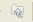
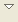

Figure: Navigator View
Once
you create a new theme , the
project files and related folders are dispalyed in the Navigator view.
Toolbar
The toolbar of the Navigator view contains the following buttons:| Back | Displays the hierarchy that was displayed immediately prior to the current display. | |
| Forward | Displays the hierarchy that was displayed immediately after the current display. | |
| Up |  | Displays the hierarchy of the parent of the current highest level resource. |
| Collapse All | Collapses the tree expansion state of all resources in the view. | |
| Link with Editor | Toggles whether the Navigator view selection is linked to the active editor. When this option is selected, changing the active editor will automatically update the Navigator selection to the resource being edited. | |
| Menu |  | Click
the upside-down triangle
icon to open a menu of items specific to the view.
Opens the Navigator Files dialog and allows you to set filter for the files in the view .
|
| Minimize |  |
Minimize the Navigator view |
| Maximize |  |
Maximize the Navigator view |
| Close |  |
Close the navigator view |